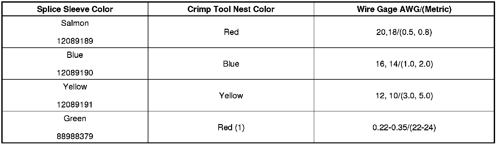
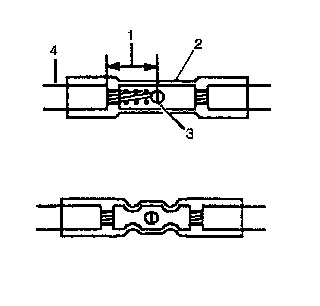

Splicing Copper Wire Using Splice Sleeves
Splicing Copper Wire Using Splice Sleeves
Tools Required
J-38125 Terminal Repair Kit
Important: Use only duraseal splice sleeves. Other splice sleeves may not protect the splice from moisture or provide a good electrical connection.
Use duraseal splice sleeves to form a one-to-one splice on all types of insulation except tefzel and coaxial. Use duraseal splice sleeves where there is special requirements such as moisture sealing. Follow the instructions below in order to splice copper wire using duraseal splice sleeves.

1. Open the harness.
* If the harness is taped, remove the tape.
* To avoid wiring insulation damage, use a sewing ripper in order to cut open the harness.
* If the harness has a black plastic conduit, pull out the desired wire.
2. Cut the wire.
* Cut as little wire off the harness as possible.
* Ensure that each splice is at least 40 mm (1.5 in) away from other splices, harness branches, and connectors. This helps prevent moisture from bridging adjacent splices and causing damage.

3. Select the proper size and type of wire.
* The wire must be of equal or greater size than the original.
* The wires insulation must have the same or higher temperature rating (4).
- Use general purpose insulation for areas that are not subject to high temperatures.
- Use a cross-linked polyethylene insulated wire for areas where high temperatures are expected.
Important: Use cross-linked polyethylene wire to replace PVC, but do not replace cross-linked polyethylene with PVC.
Cross-linked polyethylene wire is not fuel resistant. Do not use to replace wire where there is the possibility of fuel contact.
4. Strip the insulation.
* Select the correct size opening in the wire stripper or work down from the largest size.
* Strip approximately 7.5 mm (5/16 in) of insulation from each wire to be spliced (1).
5. Select the proper duraseal splice sleeve (2) and the required crimp nest tool. Refer to the Crimp and Seal Splice Table.
6. Place the duraseal splice sleeve in the J-38125-8 (GM P/N 12085115) crimp tool nest so that the crimp falls at point 1 on the splice.
7. Close the hand crimper handles slightly in order to hold the duraseal splice sleeve firmly in the proper crimp tool nest.
8. Insert the wires into the duraseal splice sleeve until the wire hits the barrel stop. The splice sleeve has a stop in the middle of the barrel in order to prevent the wire from passing through the splice (3).
9. Close the handles of the J-38125-8 (GM P/N 12085115), until the crimper handles open when released. The crimper handles will not open until the proper amount of pressure is applied to the splice sleeve.
10. Shrink the insulation around the splice.
* Using the heat torch, apply heat to the crimped area of the barrel.
* Gradually move the heat barrel to the open end of the tubing.
- The tubing will shrink completely as the heat is moved along the insulation.
- A small amount of sealant will come out of the end of the tubing when sufficient shrinkage is achieved.